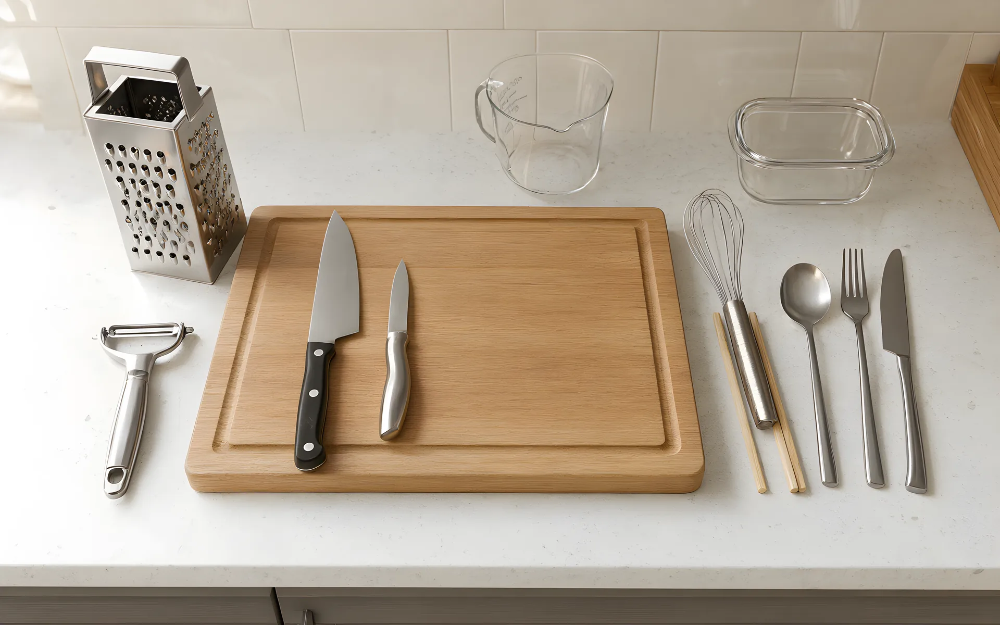
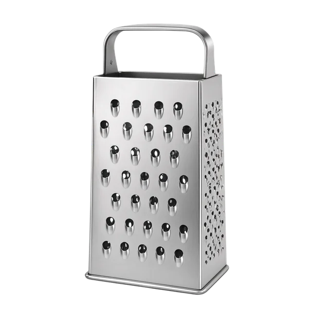
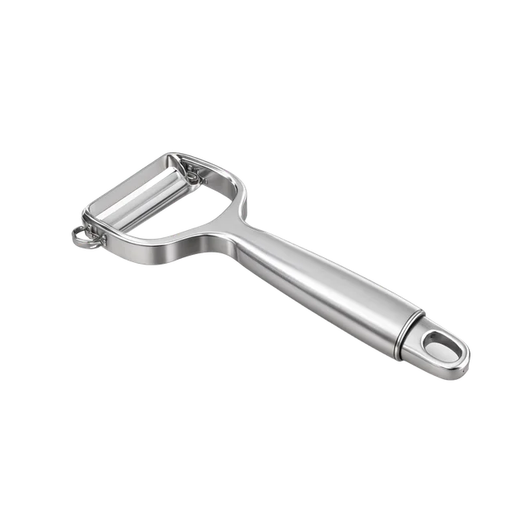
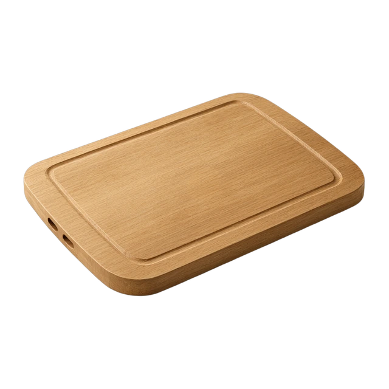
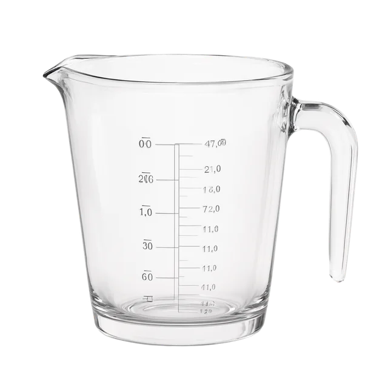
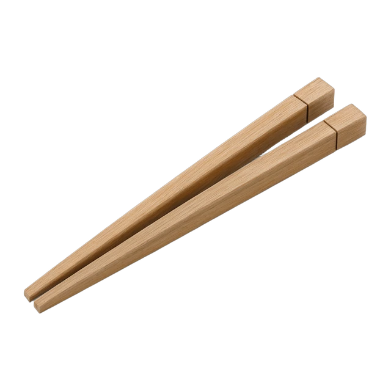

Prep
备餐台面
场景
卡片
女声
男声

指到或点一下物品
再听一次
grater
peeler
cutting board
kitchen knife
paring knife
measuring cup
food container
whisk
chopsticks
spoon
fork
table knife
kitchen counter

grater
刨丝器

peeler
削皮刀

cutting board
砧板
kitchen knife
菜刀
paring knife
削皮小刀

measuring cup
量杯
food container
保鲜盒
whisk
打蛋器

chopsticks
筷子
spoon
汤匙
fork
叉子
table knife
餐刀
kitchen counter
台面
‹ Cooktop 灶台区
厨房
Appliances 小家电 ›